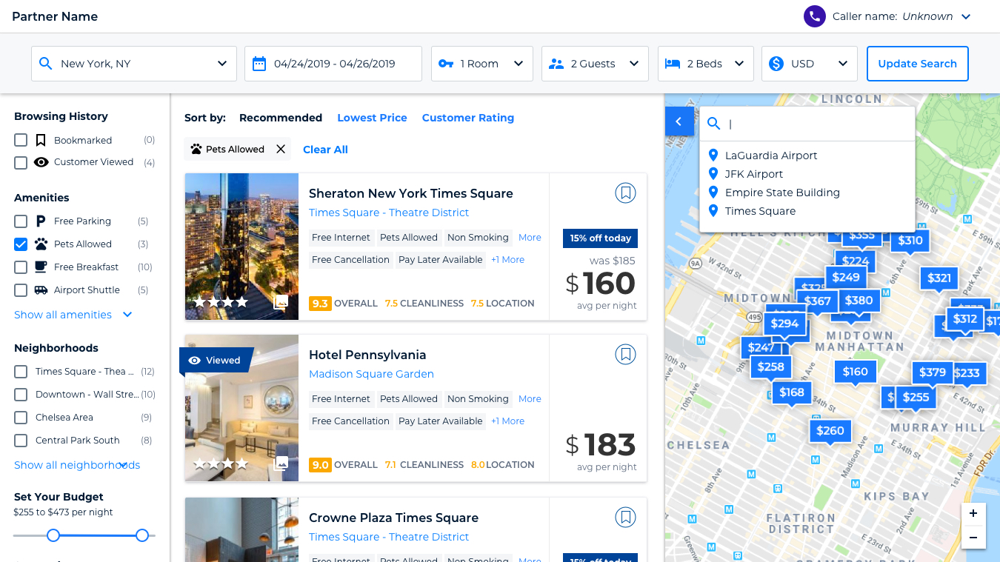
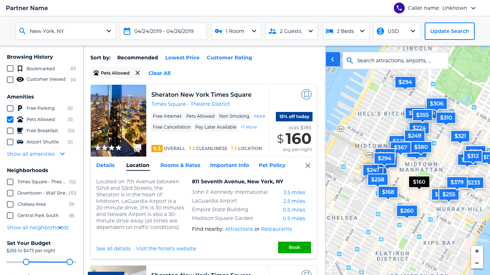

I was asked to create a design for a new Priceline phone agent travel booking platform. The Priceline phone agents who book travel for customers over the phone were using the same ecommerce platform that the general public was using to search and book travel. This platform was never designed for the needs of a phone agent. We didn't know how they were using the platform or why customers were choosing to book travel over the phone.
1. Empathize
User Survey
We were not able to speak directly to any of the phone agents so instead I created a survey that the phone agents would fill out. The survey consisted of mostly open ended questions. We wanted to hear about the customers they speak to and what is important to them, and also what the experience was like for the phone agents. Phone agents had completely different needs than a customer booking a hotel room on the Priceine website.
Some of the things we were trying to learn:
Why do customers choose to call an agent instead of booking online?
What was important to them when choosing which hotel to book?
What questions did they have that could not be answered by the content on the site?
How often did the customers book the first hotel that the phone agent recommended?
What were the phone agent's biggest frustrations using the platform?
If the phone agents could change anything about the experience what would they change?
2. Define
I reviewed all of the survey results and summarized what we heard. As a team we reviewed the list of what was important to the phone agents and their customers. We came up with a list of problems that we thought we could solve.
Some of problems we wanted to solve:
How can we better highlight hotel parking information so phone agents don't have to visit another site to find it?
How can we make it easier for phone agents to find a hotel near the customer's point of interest?
How can we allow the phone agent to save personal information that the customer has given them so they don't have to ask the same questions again during the booking process?
How can we make it easier for the phone agent to know how clean a hotel's bathrooms are?
3. Ideate
Design Studio
I brought in members of the product, accounts and development teams and we had a design studio to share and sketch ideas for how we could solve these problems.
Steps of the design studio:
Review the problems listed above.
Each member has 5 minutes to sketch out as many ideas as they can for solutions to any of the problems.
We then have each member share their ideas with the group.
Each member then has another 10 minutes of sketching to expand on one of their ideas or an idea they heard from someone else.
We then review the ideas again as a group and group any similar ideas together.
As a group we then map out each idea on a chart giving each idea a score for value vs complexity.
The group they decides which ideas we want to move forward with.
4. Prototype
UI Design
I then created a new design for a phone agent version of our ecommerce platform which included the ideas from our design studio. I also needed to work within the Priceline design system using existing components when necessary.
The design below included a lot of the ideas generated from our design studio. Some of these incuded:
Implementing a "scratchpad" at the top of the screen where the agent could add personal information the caller had given them that would then populate the checkout form later in the process.
A map tool that would allow the agent to add a map pin for a point of interest making it easier to find hotels near that location.
An inline tab system within the search results which would allow agents to quickly compare important information between hotel options.
A hotel score for both cleanliness and location which were both common questions customers had about hotels.
The hotel amenities filters were pushed higher up the page because they were used more often.
5. Test
Agent Feedback
We then took these designs and we reviewed then with some of the same phone agents that had completed the survey. The agents provided valuable feedback that we then incorporated into the next iteration of the design.
The New Design
Hotel search results - POI searchHotel search results - location details